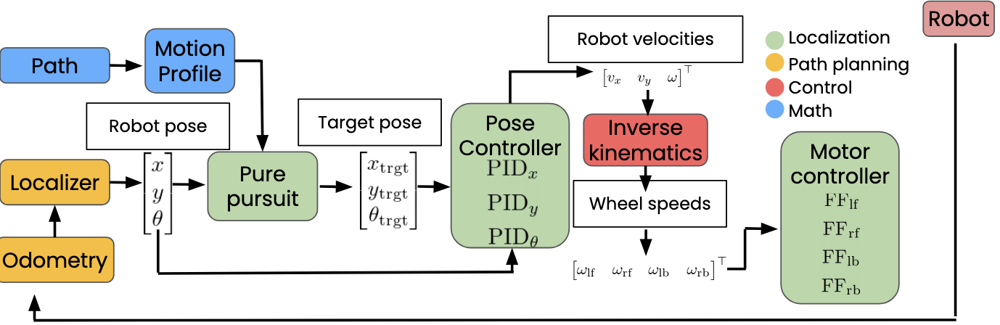

Mighty Motion
Lead Programmer · FTC Team #8721 Mighty Mechanics · 2023–2026
A custom Java motion-control library and robot codebase for FIRST Tech Challenge that replaced the open-source libraries our team had relied on. It ran our robot through the 2026 season, when we won the NYC Championship and the FTC Control Award and qualified for the World Championship in Houston.
- Built our own localization, motion profiling, holonomic pure pursuit, PID pose control and mecanum inverse kinematics, plus tuning OpModes for each controller.
- Fused goBILDA Pinpoint odometry with Limelight 3A AprilTag poses through parallel 1D Kalman filters, and isolated a Limelight firmware defect that returned NaN rotations for near-head-on poses.
- Built AutoAim: a turret angle solver plus a quadratic distance-to-RPM regression for the shooter, so aligning a shot became a single action.
- Cut autonomous overshoot by regressing braking distance against velocity and decelerating early.